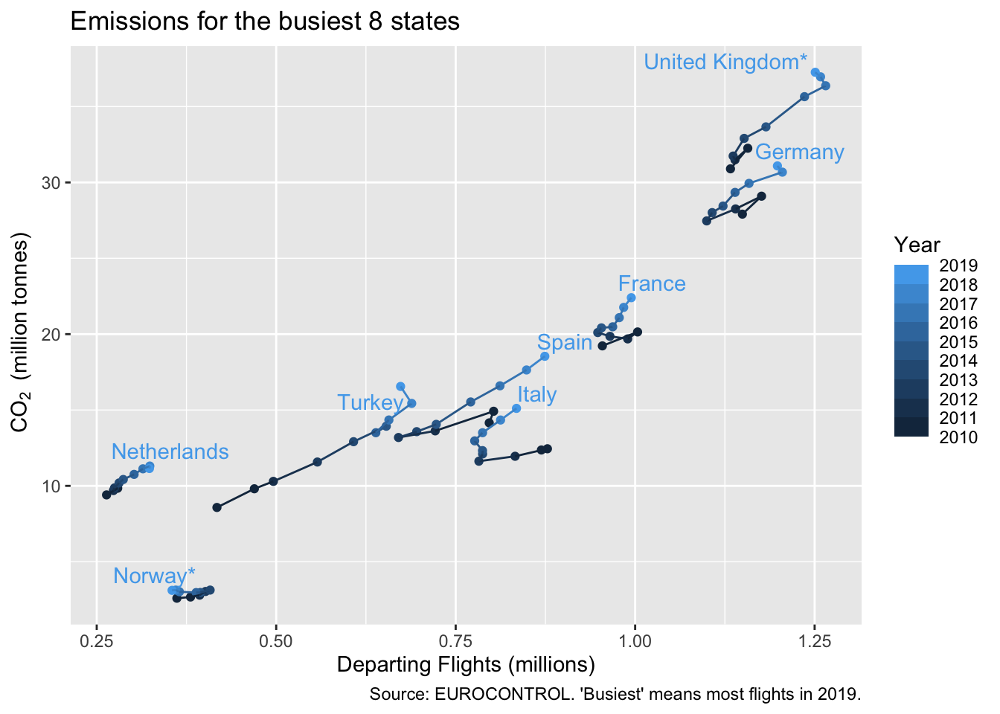
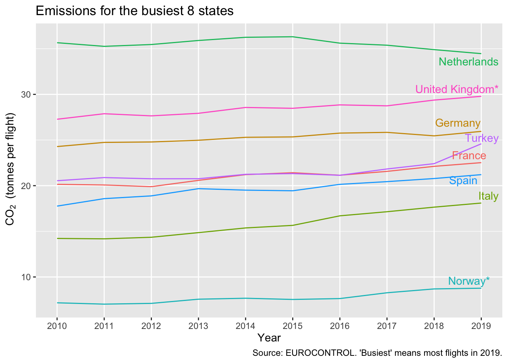
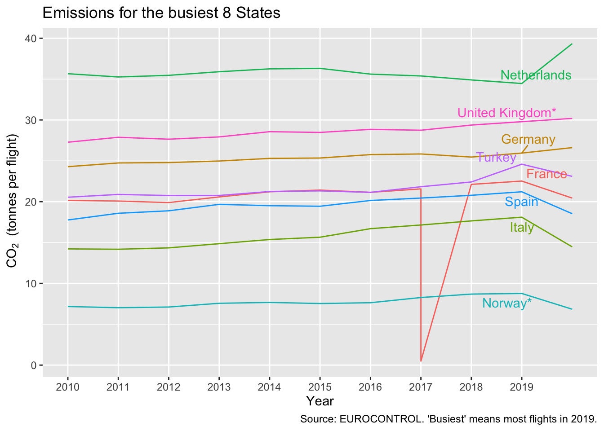
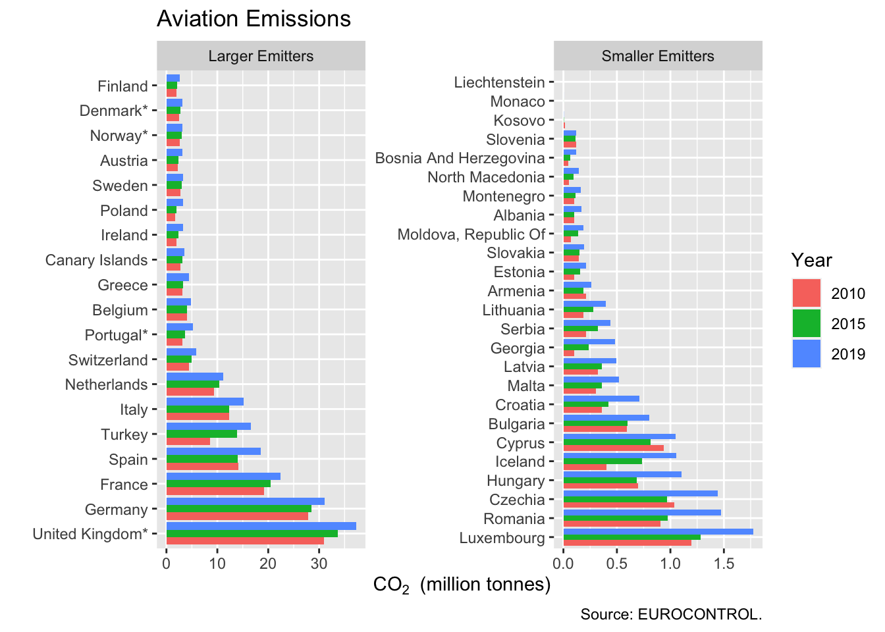

Chapter 5 Sorting Bars, Saving Graphs, Facets
While nothing beats a well hand-crafted chart, there are times when you want to just run the code and get a quick update, as a .png say. In this chapter we see how to do a classic sorted-bar chart and to save it to a file for use elsewhere. We need slightly different methods for simple bar charts and more complex ones.
| In this chapter |
|---|
geom_col(), dodge, reorder(), ggsave(), as.factor(), factor(), arrange(), facet_wrap(), select, plots pane |
5.1 The simple sorted bar chart - more on CO2
A classic visualisation is the bar chart, sorted from longest to shortest. With ggplot there are a couple of ways to get a bar chart. If you want ggplot to count the rows for you, use geom_bar. Here we already have values for the length of the bar, so we use geom_col instead.
For the simplest bar charts, there is a quick way to get the order you want. In place of state_label for the x-axis, you give reorder(state_label, Y_CO2_QTY_TONNES), the second being the variable to sort by. If you find the bars a bit top-heavy, put a - in front of Y_CO2... to reverse the order.
The final novelty in this graph is coord_flip(). Forty-something State names is a lot of text to cram onto the horizontal axis. So we flip the axes. You’ll need to decide if this trick works where you want to use the graph. We’ll see other ways to separate the labels on the axes in (TBD).
ggplot(aviation_co2 %>%
filter(YEAR == 2019),
aes(reorder(state_label, Y_CO2_QTY_TONNES),
Y_CO2_QTY_TONNES/1e6)) +
geom_col() +
labs(x = "",
y = bquote(~CO[2]~" (million tonnes)"),
title = "Aviation Emissions in 2019",
caption = "Source: EUROCONTROL.") +
coord_flip()
If you were to google ‘ggplot ordered bar chart,’ you might find references to ‘factors.’ That becomes necessary when the charts are more complicated. We’ll look at that in section 5.3.1.
5.2 Saving a plot
You might be looking at the bar chart and thinking that it’s the wrong proportions for your need (portrait rather than landscape, or vice versa) or you might be thinking the axis labels are still a bit squashed together.
The proportions on your screen will depend on a number of things including the space you have allowed for the ‘Plots’ window. Now, the plots window has an export button which you could use. It allows for re-sizing, but that means you have to do the same manual intervention each time.
We prefer to use ggsave() to save the most-recent plot, and at the same time set the aspect ratio that we need. Usually it’s worth doing this before working too much on the font sizes, since you don’t really know if there’s a problem until you’ve seen the png.
Finally, we use the graphs folder we created for the project. Square seems about right for this graph; and having one of the dimensions around 15cm also seems to produce png that are good enough for reports and slides without being too big.
ggsave("graphs/FirstSortedBars.png", width = 15, height = 15, units = "cm")5.3 Plotting more than one year
I can think of four ways to plot more than one year, and there are no doubt more than that:
- as staggered bars, though we probably will have to work hard to make enough space;
- as ‘facets,’ creating one sub-plot per year;
- as a few graphs, merged and aligned using an dedicated package like
cowplot; - as multiple graphs using a loop
Number (3) is particularly useful for combining graphs of different variables, but it’s a bit heavy to deal with here. We’ll deal with (4) in section (TBD) when we look at loops. The first two we will do in the next sections.
5.3.1 Staggered bars, and factors
We took some shortcuts in section 5.1, which will need sorting out for the staggered bars. First we need to choose a couple of years, since there certainly isn’t room for more than two. That’s a filter that we’ve seen before. Secondly, we used state_label before because it was prettier, but this only exists for 2019, so we have to go back to using STATE_NAME. It’s probably time to turn this name into title case once and for all.
The separation by year is done in the aesthetic aes() as you might expect. We want the bars to be different colours by year. In this case it’s the fill that we specify; colour would add an outline to the bars. To get the bars side by side we set the position = "dodge" parameter in geom_col().
The least obvious, final step is that ‘year’ needs to be a discrete variable, whereas currently it’s num which is a continuous number. Slightly oddly, as.integer() doesn’t work: it’s still treated as continuous by ggplot, presumably because there are potentially still quite a lot of integers.
We could convert to a string with as.character, but we need to start using factors, so let’s do that here.
Factors in R were originally a way to save space with character variables in a dataset. In aviation_co2 for example, rather than store ‘ALBANIA’ 10 times, for each row, a factor would give ALBANIA a numeric code and store that. The character strings become the levels. [Try z <- as.factor(aviation_co2$STATE_NAME) and see what is said for z in the environment pane. rm(z) to tidy up, if you wish.]
For this example, we’ll convert YEAR on the fly, with an as.factor in the aes() call.
aviation_co2 <- aviation_co2 %>%
mutate(STATE_NAME = str_to_title(STATE_NAME))
ggplot(aviation_co2 %>%
filter(YEAR %in% c(2010, 2019)),
aes(reorder(STATE_NAME, Y_CO2_QTY_TONNES),
Y_CO2_QTY_TONNES/1e6,
fill = as.factor(YEAR))) + # make discrete
geom_col(position = "dodge") +
labs(x = "",
y = bquote(~CO[2]~" (million tonnes)"),
title = "Aviation Emissions in 2019",
caption = "Source: EUROCONTROL.",
fill = "Year") + # nicer label for legend
coord_flip()
Look closely at the graph. What is the sort order? Neither the 2010 nor the 2019 bars are actually in order. We’ve asked reorder to do too much. It seems to have sorted by the total of the 2 years, which is a reasonable thing to do in the circumstances. But I think that’s hard for the user of the graph to interpret, and I’d like the ordering to be by 2019.
We can do this ordering with factors. First define a vector that is in the order we want, using arrange() to sort it. The desc() reverses the order. Then define a factor version of the state names, and insist that it’s in this fixed order. factor() is like as.factor() which we used in the previous chunk of code, but allows these extra parameters.
state_order <- aviation_co2 %>%
filter(YEAR == 2019) %>% # in year 2019
arrange(desc(Y_CO2_QTY_TONNES)) %>% # descending order
pull(STATE_NAME)
aviation_co2 <- aviation_co2 %>%
mutate(ordered_states = factor(STATE_NAME,
levels = state_order, ordered = TRUE))
ggplot(aviation_co2 %>%
filter(YEAR %in% c(2010, 2019)),
aes(ordered_states,
Y_CO2_QTY_TONNES/1e6,
fill = as.factor(YEAR))) + # make discrete
geom_col(position = "dodge") +
labs(x = "",
y = bquote(~CO[2]~" (million tonnes)"),
title = "Aviation Emissions",
caption = "Ordering by 2019 emissions. Source: EUROCONTROL.",
fill = "Year") + # nicer label for legend
coord_flip()
5.3.2 Chart facets, more years in the bar chart
If you want the reader to compare things, a good rule of thumb is to make sure these things are all in the same graph. We’ve achieved this for comparisons between years and between countries. However, this is a bit of a squeeze, vertically, while there’s lots of empty space. Plus, it doesn’t look like this method would easily cope with a third year, say.
ggplot provides a simple way to split charts into ‘facets,’ which can sometimes be a way to show variation across a dimension with just a few values (2 or 3 years, say), while aligning the axes in a sensible way. There’s a bit of a twist in the notation: you can’t just mention a variable name (as you can in aes()), you need either to say vars(YEAR) or use a ‘formula’ notation starting with a tilde ~, which involves less typing so that’s what I’ve done here. The _wrap would allow wrapping onto multiple rows, but I just want one row here.
ggplot(aviation_co2 %>%
filter(YEAR %in% c(2010, 2015, 2019)),
aes(ordered_states,
Y_CO2_QTY_TONNES/1e6)) +
geom_col() +
facet_wrap(~YEAR, nrow = 1) +
labs(x = "",
y = bquote(~CO[2]~" (million tonnes)"),
title = "Aviation Emissions",
caption = "Source: EUROCONTROL.") +
coord_flip()
facet_wrap has given all the x- and y-axes the same matching scale, and not bothered to repeat the y-axis labels. So it’s compact. The graph is not bad for comparing relative sizes of the larger States in a given year, and for seeing how the ranking changes. But it’s not that easy to compare amounts between years.
However, we can use facets to split in a different way, if we arbitrarily put the States into two groups. Remember that [ ] is a way to select elements of the vector, in this case the first 19. We could equally have used head(state_order, 19), but the [1:19] is a model that is used more often.
We turn off the scale-matching (scales = "free"), so really it’s two separate graphs, but with one piece of code.
aviation_co2 <- aviation_co2 %>%
mutate(size = if_else(ordered_states %in% state_order[1:19],
"Larger Emitters", "Smaller Emitters"))
ggplot(aviation_co2 %>%
filter(YEAR %in% c(2010, 2015, 2019)),
aes(ordered_states,
Y_CO2_QTY_TONNES/1e6,
fill = as.factor(YEAR))) +
geom_col(position = "dodge") +
facet_wrap(~size, nrow = 1, scales = "free") +
labs(x = "",
y = bquote(~CO[2]~" (million tonnes)"),
title = "Aviation Emissions",
caption = "Source: EUROCONTROL.",
fill = "Year") + # nicer label for legend
coord_flip()
This certainly allows better comparisons of some of the mid-range emitters, and between years. Assuming you’re not after comparison of of Luxembourg and Finland, perhaps this is fit for purpose.
There are many different distributions in flight data that have this long tail challenge: with most of the flights in a few airports, or a few countries, or by a few aircraft types. It’s easy enough to switch to a logarithmic scale, but that’s then often hard to read. Facets like this are a reasonable alternative, and adaptable.
5.4 Exercises
5.4.1 Questions
- Plot the bar chart of section 5.1 with the longest bars at the bottom.
- Plot the bar chart of section 5.1 without the 3 near-zero entries. (Hints: View the data. Filter on 2019 and choose a threshold.)
- Test the statement in the text that
aes(..., colour=as.factor(YEAR))gives an outline to the bars. - Use
selectand!to remove thesizevariable again. [Hint: Until you’re sure it works, don’t overwrite your dataset but make a temporary one, eg. start withz <-.] - Read the description of
geom_barin the help file. In the first bar chart, switch to usinggeom_barinstead. [Hint: A minor addition to theaes().] - Save the final faceted bar chart to a png file.
5.4.2 Answers
- Use reorder(state_label, -Y_CO2_QTY_TONNES).
- Use
filter(YEAR == 2019 & Y_CO2_QTY_TONNES > 100000). - Did it?
z <- aviation_co2 %>% select(!size), then if it works, replacez.- Replace
geom_colwithgeom_barand addweight =in front ofY_CO2_QTY_TONNES/1e6, thus switching it from theyparameter to theweight. ggsave("graphs/2facet co2.png", width = 15, height = 10, units = "cm")or some other appropriate proportions. Did you save the correct graph? Remember that by default it saves the last one plotted.